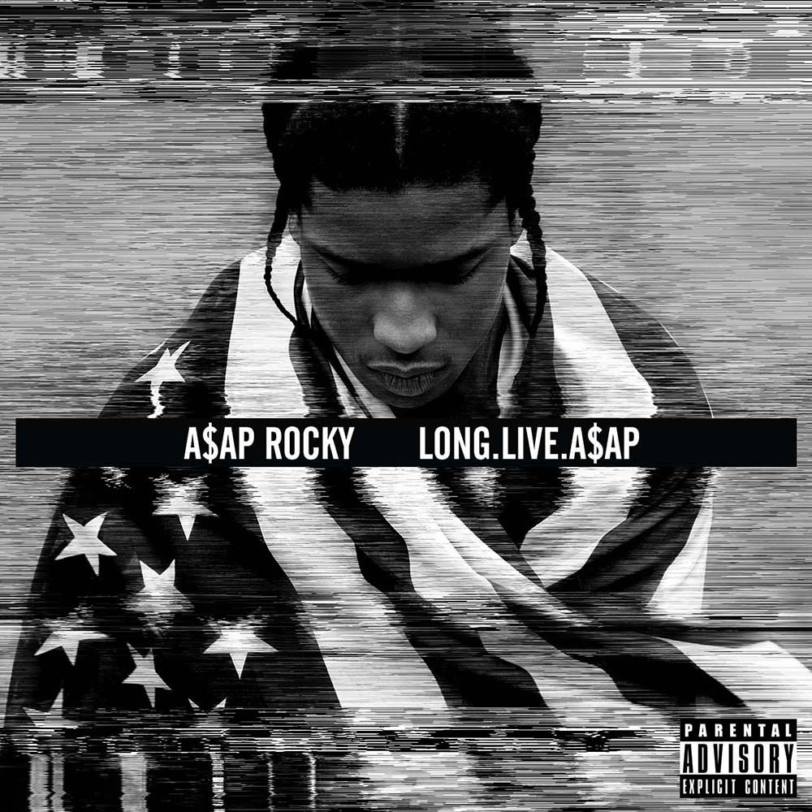
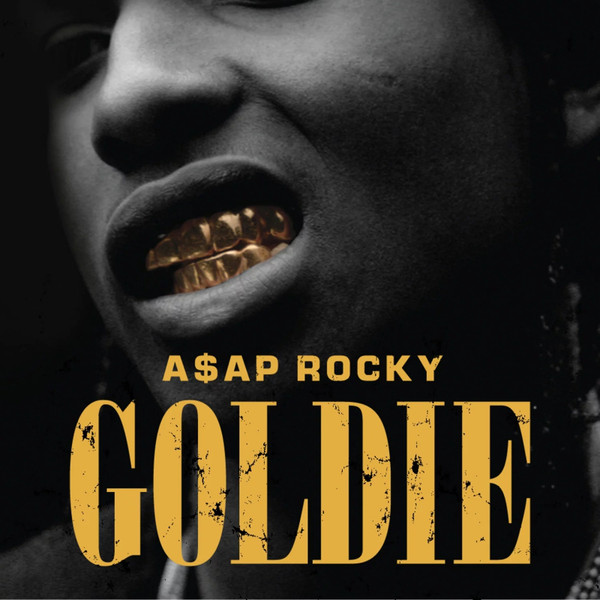

Albums

- 

- 
Rakim Mayers est né le 3 octobre 1988 dans le quartier d'Harlem, à New York. Il est barbadien du côté de son père.
Rakim Mayers commence à rapper à l'âge de 8 ans, influencé par son grand frère. C'est à 13 ans seulement, juste après l'incarcération de son père et quand son frère se fait tuer dans une rue d'Harlem à cause du trafic de drogue, qu'il demeure certain que dealer n'est pas un métier d'avenir. Après la mort de son grand frère Ricky, il passe avec sa mère et sa petite sœur d'abris de SDF à des plans squats entre le Bronx et Manhattan. Quand il se met à vendre du crack, à l'âge de 15 ans, il déménage avec sa mère et sa sœur dans le New Jersey. Le père de Rakim Mayers meurt en 2012 à cause d'une histoire de drogue, il va dès lors s'adonner au rap, qu'il considère comme une échappatoire. Il grandit sous l'influence de groupes de son quartier d'Harlem comme The Diplomats. Il est aussi influencé par Mobb Deep, Three Mafia, UGK, Run DMC, Wu-Tang Clan, ou encore Bone Thugs-n-Harmony.